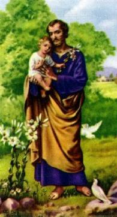
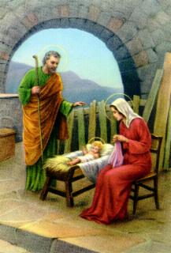
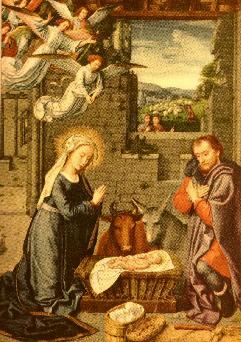
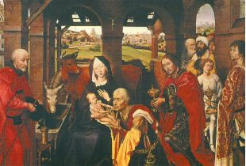
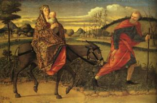

A GRAVIDEZ DA NOIVA DE JOSÉ
 Depois do nascimento de João Batista, filho de
Isabel, Maria regressou a Nazaré, acompanhada de
uma pessoa da família.
Depois do nascimento de João Batista, filho de
Isabel, Maria regressou a Nazaré, acompanhada de
uma pessoa da família.
Por este tempo, a gravidez
de Maria já se fazia notar. Como era natural, seus pais, os amigos
e parentes exultaram com o fato, pois era o anuncio de que mais um
membro da família 
Segundo os costumes e a lei judaica, este fato era perfeitamente normal. Entre o Noivado e as Bodas (o Casamento propriamente dito), existia um espaço de tempo chamado "Condução" que podia chegar até 12 meses, e no qual, o noivo tinha poder estrito sobre a sua companheira, inclusive se ela ficasse grávida, a prole era considerada legítima.
Todavia, José ficou admirado! Ele que não teve qualquer participação, como justificar aquele fato? Ele conhecia as virtudes de sua noiva e lembrava o projeto de castidade que ambos fizeram!... Por isso mesmo, como explicar aquele acontecimento?
 Triste e pensativo passou dias terríveis,
repleto de constrangimento e intranquilidade. Não encontrava nenhum
motivo que o fizesse entender aquela ocorrência. Por isso, enquanto
se decidia o que fazer, um Anjo do SENHOR apareceu-lhe em sonho e
lhe disse:
"José, filho de Davi, não temas receber Maria, tua mulher,
pois o que Nela foi gerado vem do ESPÍRITO SANTO. Ela dará à luz
um filho e tu o chamarás com o nome de JESUS, pois ele salvará
o seu povo dos seus pecados".
(Mt 1,20-21)
Triste e pensativo passou dias terríveis,
repleto de constrangimento e intranquilidade. Não encontrava nenhum
motivo que o fizesse entender aquela ocorrência. Por isso, enquanto
se decidia o que fazer, um Anjo do SENHOR apareceu-lhe em sonho e
lhe disse:
"José, filho de Davi, não temas receber Maria, tua mulher,
pois o que Nela foi gerado vem do ESPÍRITO SANTO. Ela dará à luz
um filho e tu o chamarás com o nome de JESUS, pois ele salvará
o seu povo dos seus pecados".
(Mt 1,20-21)
Homem responsável e de fortes convicções religiosas, recuperou a tranquilidade espiritual, afastando para longe a tentação demoníaca que colocava a malícia no seu pensamento. Na sequência dos dias, ultimou os preparativos para as suas núpcias com Maria.

CASAMENTO DE JOSÉ
 A Celebração das Bodas seguiu o rito
judaico e a felicidade logo tomou conta do
A Celebração das Bodas seguiu o rito
judaico e a felicidade logo tomou conta do
NASCIMENTO DE JESUS
 Em face do Recenseamento, Belém estava com grande
movimentação de pessoas e por essa razão, José e Maria não
encontraram nas casas dos parentes e amigos um local onde
pudessem se abrigar, foram para uma gruta que as vezes era
utilizada como estrebaria. Estando lá, completaram-se os dias da
gestação e nasceu JESUS, NOSSO SENHOR e Redentor de toda
humanidade. (Lc 2,6-7)
Em face do Recenseamento, Belém estava com grande
movimentação de pessoas e por essa razão, José e Maria não
encontraram nas casas dos parentes e amigos um local onde
pudessem se abrigar, foram para uma gruta que as vezes era
utilizada como estrebaria. Estando lá, completaram-se os dias da
gestação e nasceu JESUS, NOSSO SENHOR e Redentor de toda
humanidade. (Lc 2,6-7)
 "E o Verbo se fez
carne e habitou entre nós".
(Jo 1,l4)
"E o Verbo se fez
carne e habitou entre nós".
(Jo 1,l4)
Naquela região, alguns pastores que vigiavam o rebanho receberam a visita de um Anjo que lhes anunciou: "Não tenhais medo! Eis que eu vos anuncio uma grande alegria, que será para todo o povo: Nasceu-vos hoje um Salvador, que é o CRISTO SENHOR, na cidade de Davi. Isto vos servirá de sinal: encontrareis um recém-nascido envolto em faixas e deitado numa manjedoura. E de repente, juntou-se ao Anjo uma multidão do exército celeste a louvar a DEUS, dizendo: Glória a DEUS nas alturas, e paz na terra aos homens que ELE ama"! (Lc 2,10-15)
 Os pastores estavam admirados com o que
viam e se apressaram à chegar a Gruta em
Os pastores estavam admirados com o que
viam e se apressaram à chegar a Gruta em
Maria ouvia e conservava todos aqueles acontecimentos no coração, e no seu silêncio, meditava e procurava entender tudo que diziam sobre JESUS.
Ela e José tinham acabado de viver uma experiência verdadeiramente sobrenatural com o nascimento do Filho. Para Maria, aquelas palavras anunciadas pelo Arcanjo Gabriel expressando todo o Amor de DEUS por Ela, concretizavam-se naquela linda criança que feliz sorria deitada numa manjedoura.
 Por isso mesmo, José, cheio de admiração, sentia
vigorosamente o Mistério de DEUS envolver a sua vida. E se alguma
desconfiança ainda existia em seu espírito, pela explicação que recebeu
do Anjo a respeito da gravidez de sua esposa, agora, com aquele
nascimento milagroso, dissiparam-se todas as possíveis
dúvidas, e prostrado junto Dela, adorava o Pequenino DEUS que
lhe foi confiado pelo CRIADOR, para que O protegesse
por toda a vida.
Por isso mesmo, José, cheio de admiração, sentia
vigorosamente o Mistério de DEUS envolver a sua vida. E se alguma
desconfiança ainda existia em seu espírito, pela explicação que recebeu
do Anjo a respeito da gravidez de sua esposa, agora, com aquele
nascimento milagroso, dissiparam-se todas as possíveis
dúvidas, e prostrado junto Dela, adorava o Pequenino DEUS que
lhe foi confiado pelo CRIADOR, para que O protegesse
por toda a vida.
Visivelmente emocionados o casal jubilosamente manifestava uma indescritível felicidade, porque naquele momento sagrado também se concretizou um segundo e importante milagre: pela santíssima Vontade de DEUS Maria permaneceu Virgem. O SENHOR que já a havia preservado no instante da fecundação, considerando a sua singular e heróica demonstração amorosa de conservar a virgindade, preservou também a sua integridade física no momento do nascimento de JESUS. Da mesma forma que o Verbo de DEUS entrou em Maria e SE agasalhou em seu ventre, misteriosamente ELE saiu, sem lhe causar qualquer dano.
VISITA DOS REIS MAGOS
 Terminado o recenseamento, mudaram-se da Gruta
e passaram a viver numa pequena casa em Belém.
Terminado o recenseamento, mudaram-se da Gruta
e passaram a viver numa pequena casa em Belém.
JESUS já estava com
quase dois anos de idade quando recebeu a visita dos Três Reis

Herodes Magno, rei da Judéia, sabendo da visita dos Magos, com receio de perder o seu trono para o "Rei dos Judeus", projetou em sua mente doentia eliminar JESUS. Todavia, como não sabia onde ELE estava, ordenou a matança de todas as crianças de Belém com menos de dois anos de idade.
FUGA PARA O EGITO
 José avisado em sonho sobre os planos do terrível
monarca, corajosamente na mesma noite, levantou-se e fugiu em
companhia de Maria, levando o MENINO para o longínquo Egito.
(Mt 2,13-14)
José avisado em sonho sobre os planos do terrível
monarca, corajosamente na mesma noite, levantou-se e fugiu em
companhia de Maria, levando o MENINO para o longínquo Egito.
(Mt 2,13-14)
Como era noite, sem
tempo para preparar a viagem, é provável que saíram a pé pela estrada
que conduz a Hebron. Em Hebron devem ter chegado ao amanhecer
e sem demora, agilizaram os preparativos para uma longa viagem.
Com o ouro presenteado pelos Magos, devem ter adquirido
dois camelos dromedários (que são os mais ágeis e velozes)
e comprado 
Lá permaneceram cerca de 4 meses, quando José novamente foi avisado em sonho por um Anjo do SENHOR, que Herodes tinha morrido. Mas como em seu lugar, no Governo da Judéia ficou o filho Arqueláu, mau e perverso como o pai, José que planejara regressar à Belém, decidiu levar sua esposa e JESUS para a casa que possuíam em Nazaré da Galiléia. (Mt 2,19-23)
 Em Nazaré puderam viver unidos e com certa
tranquilidade, construindo uma admirável família que é exemplo para
toda humanidade, pela consciência e responsabilidade paternal, pela
harmonia que os envolvia, mesmo na simplicidade de suas funções
e dos afazeres diários, revelando sobretudo que o amor sincero
e honesto estava colocado num plano de real destaque e era
tão grande, que administrava de maneira primorosa os
sentimentos mais profundos, dos membros da Sagrada
Família.
Em Nazaré puderam viver unidos e com certa
tranquilidade, construindo uma admirável família que é exemplo para
toda humanidade, pela consciência e responsabilidade paternal, pela
harmonia que os envolvia, mesmo na simplicidade de suas funções
e dos afazeres diários, revelando sobretudo que o amor sincero
e honesto estava colocado num plano de real destaque e era
tão grande, que administrava de maneira primorosa os
sentimentos mais profundos, dos membros da Sagrada
Família.